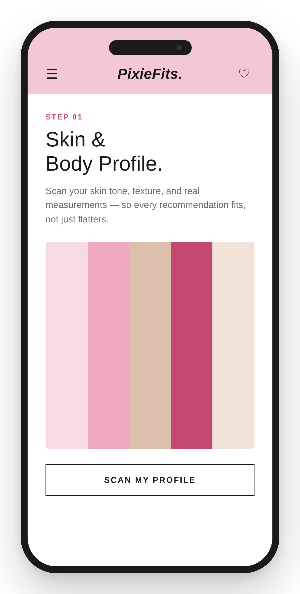
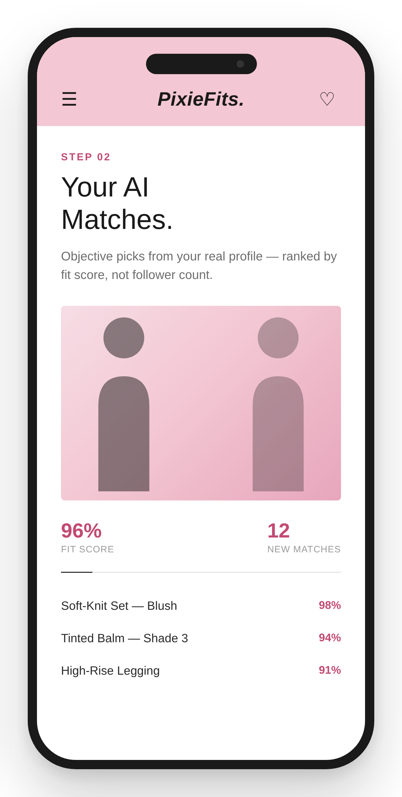

PixieFits
AI-driven fashion & beauty personalization platform.
Fashion and beauty grew into a massive industry — but two things stayed broken.
Noise over fit
Influencer-driven marketing on TikTok and Instagram floods the market, making it genuinely hard to find what actually fits your body and skin.
No girly, niche community
There's no Reddit-style vertical where fashion & beauty-obsessed women can go deep on honest fit and product reviews together.
Hyper-personalized AI curation with the marketing noise stripped out — anchored by a community built around it.
Viral acquisition
AI Photobooth + sport-specific style recommendations act as a hook — driving organic, self-directed sharing.
Body & skin intelligence
Objective matching from real body measurements and AI-scanned ingredient labels — not influencer picks.
Girly community
Users with similar body types and skin concerns curate and discuss items together, Reddit-style.
How it works.
(OCR + fit logic)
(user & catalog data)
(clicks, views)
(batch sync)
(DAU / MAU / CTR)
Two taps from real body data to a fit you can trust.


Built and measured end to end.
Enterprise-grade analytics, from scratch
Benchmarked Airbnb & Duolingo to design a Funnel / Retention / Cohort analytics architecture with an offline-first event tracking queue.
Admin dashboard for real-time KPIs
DAU, MAU, conversion rate, and AI recommendation CTR — monitored live, not guessed at.
Full-stack ownership
React · TypeScript · Firebase Firestore (flat NoSQL schema) · Tailwind CSS · Framer Motion.